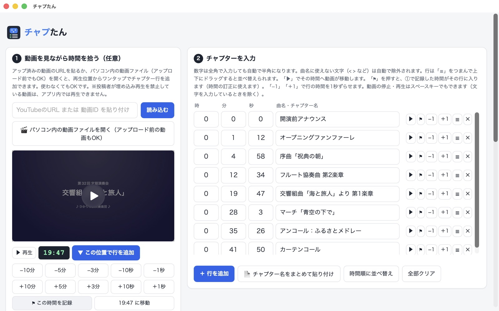
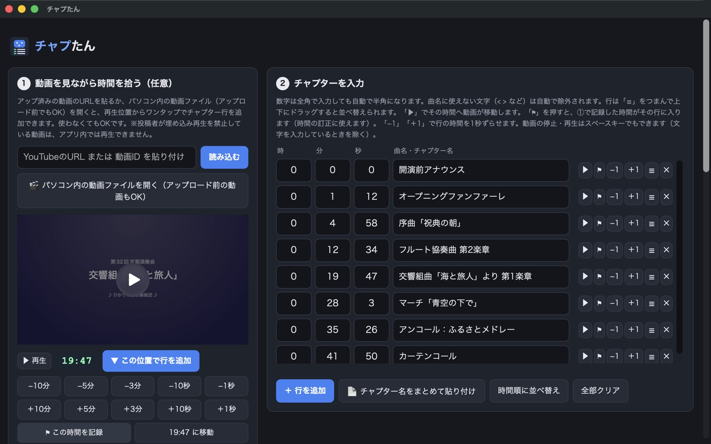
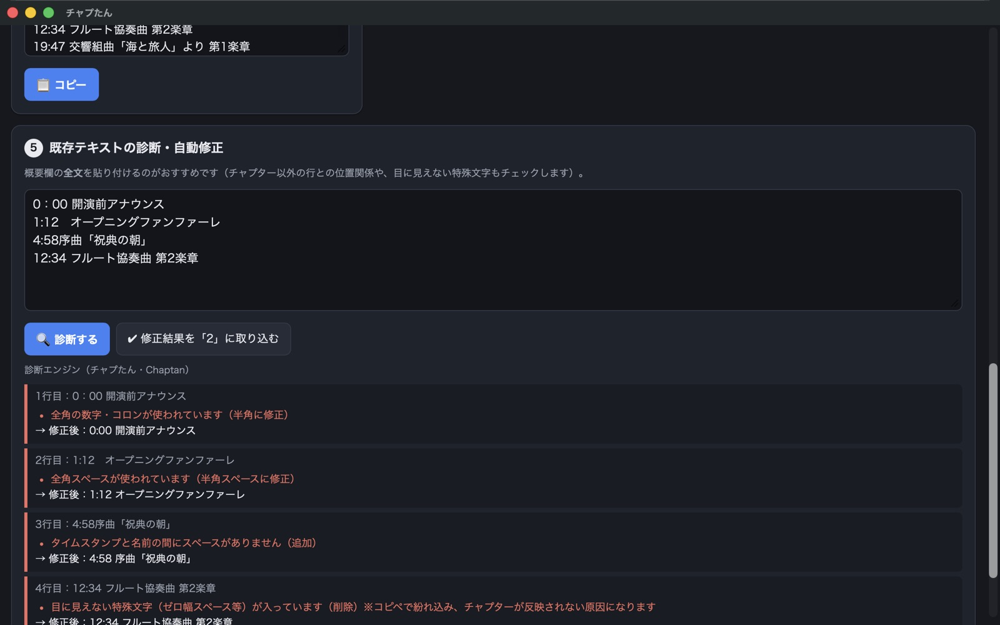
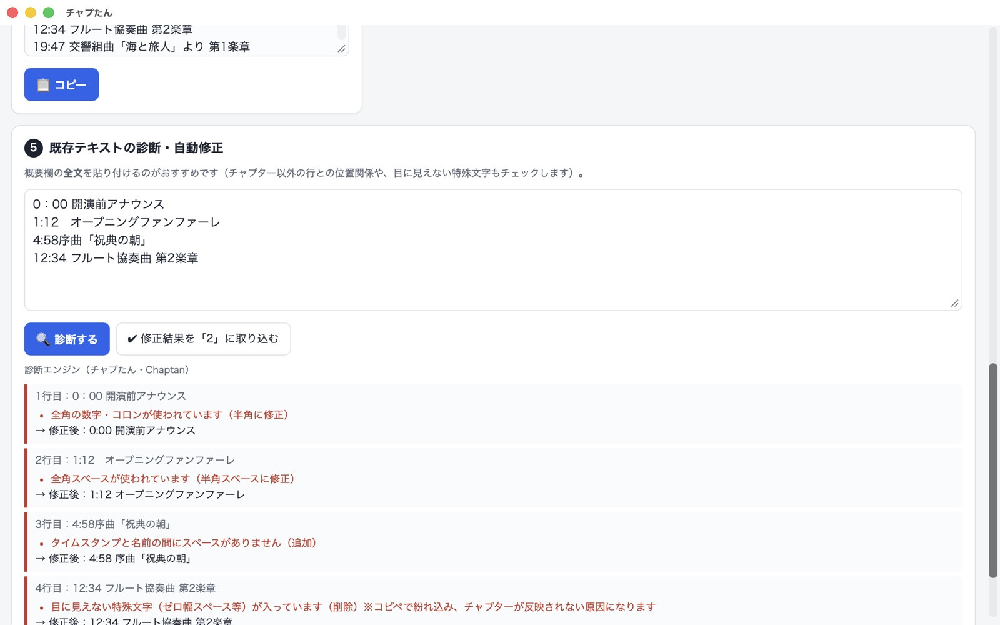
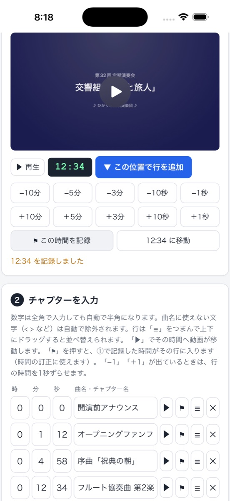
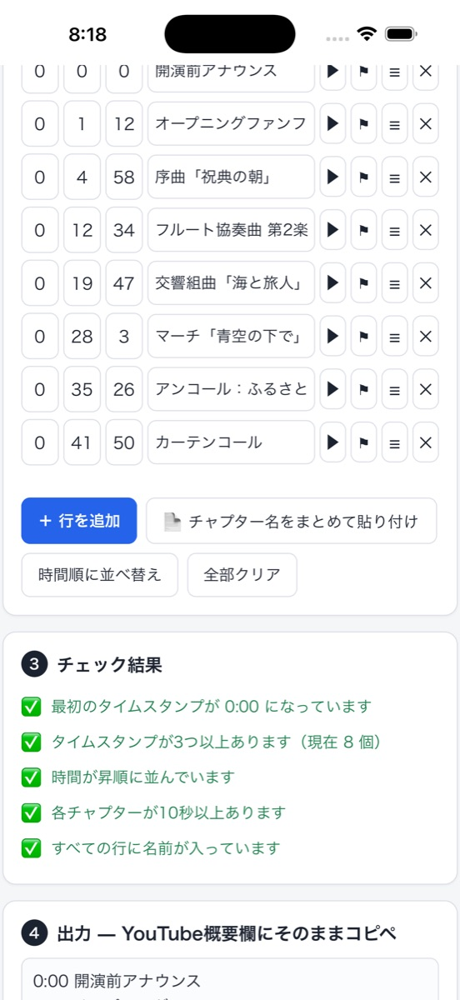
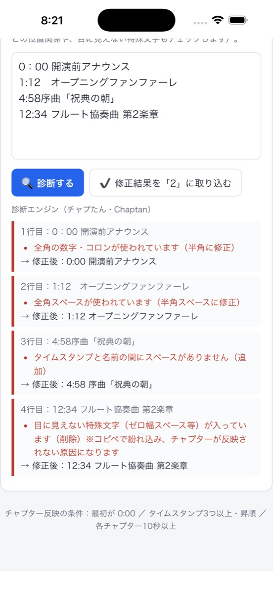
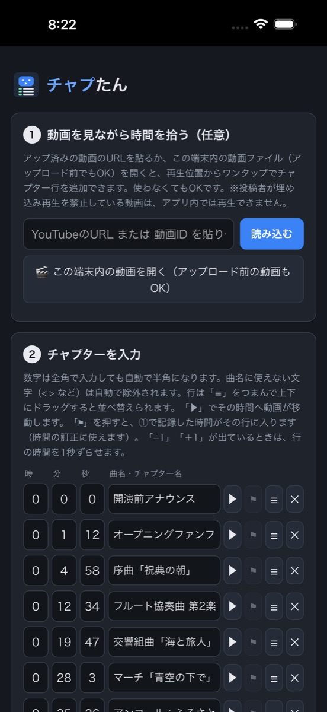

チャプたん
動画のチャプターを、正しく作る。
動画の概要欄に貼る「チャプター（目次）テキスト」を、反映される正しい形で作るアプリです。「ルールどおりに書いたのにチャプターが付かない」の原因になる、全角文字や目に見えない特殊文字を入力の段階で防ぎます。
- Mac
- iPhone
- iPad
- 一度の購入で全部の端末に
- データの収集なし

反映されない原因は、見えない所にある
全角の数字やコロン、コピー＆ペーストで紛れ込むゼロ幅スペースやノーブレークスペース、タイムスタンプの中の余分な空白。チャプたんは、これらを入力の段階で防ぎます。
入力するだけで正しい書式
時・分・秒とチャプター名を入れるだけで、正しい書式のテキストができます。コピーはボタン1つ。
使えない文字は入口で止める
全角の数字は自動で半角に。使えない文字は入力の時点でブロックします。
反映の条件をいつも確かめる
最初が 0:00、3つ以上、時間の順、各10秒以上。条件を満たしているかを常に表示し、その場で直せます。
今あるテキストを診断
使っているチャプターのテキストを貼り付けると、目に見えない特殊文字まで見つけて、自動で直します。
見ながら時間を拾う
動画を並べて再生し、今の位置からボタン1つ（Mac は ⌘J）でチャプターの行を追加。3分・5分・10分の移動や時間の記録も。
その場で確かめて直す
各行の再生ボタンで動画がその時間へ移動。合っているかを確かめながら、1秒単位で直せます。
アップロード前の動画でも
手元の動画ファイルを開いて、公開する前にチャプターを作っておけます。
自動で保存、通信なしでも
入力した内容は自動で保存。インターネットにつながっていなくても使えます。
- 最初が 0:00
- 3つ以上
- 時間の順
- 各10秒以上
画面
横にすべらせると、ほかの画面も見られます。明るい表示と暗い表示の両方に対応しています。
Mac



iPhone




使い方
画面は上から順に、番号の付いた5つの欄に分かれています。
- 動画を見ながら時間を拾う（任意）: 動画の URL や ID を貼るか、手元の動画ファイルを開きます。再生して「この位置で行を追加」で、今の時間の行ができます。
- チャプターを入力: 時・分・秒とチャプター名を入れます。全角で入れても半角になります。行は「≡」をつまんで並べ替えられます。
- チェック結果: 反映の条件を満たしているかが出ます。
- 出力: できたテキストを「コピー」して、概要欄に貼ります。
- 既存テキストの診断・自動修正: 今使っているテキストを貼ると、問題の場所と直し方が出ます。「修正結果を『2』に取り込む」で、直したものを入力欄へ移せます。
投稿者が埋め込み再生を許可していない動画は、アプリの中では再生できず、再生位置の取り込みも使えません。その場合も、テキストの作成・チェック・診断はすべての動画で使えます。
よくある質問
書式は正しいはずなのに、チャプターが反映されません
まず概要欄の全文をコピーして、アプリの「5 既存テキストの診断」に貼り付けて診断してください。目に見えない特殊文字や、チャプターより上にあるURLリンクなども検出できます。診断で問題がない場合は、チャンネルの「上級者向け機能」が解放されているか確認してください（YouTube Studio → 設定 → チャンネル → 機能の利用資格）。未解放だと、タイムスタンプが青リンクになってもシークバーは分割されません。
一度表示されていたチャプターが、いつの間にか消えました
概要欄を短時間に何度も編集すると起きることがあります。概要欄のチャプター部分をいったん削除して保存し、10分ほど待ってから貼り直して保存すると、再処理されて復活することがあります。反映には数時間かかる場合もあります。
曲名の「%」だけが消えてしまいます
動画サイト側の処理で「%」が消えてしまうことがあります。「パーセント」とカタカナで書くのが安全です。アプリの入力画面・診断でも注意をお知らせします。
パソコン内の動画ファイルが再生できません
mp4 / webm 形式がおすすめです。再生できない形式の場合は、動画編集ソフトなどで書き出し直してからお試しください。
入力したデータはどこに保存されますか？
すべてお使いの端末の中にだけ保存されます。開発者や第三者のサーバーに送信されることは一切ありません。
お問い合わせ
アプリの不具合やご要望など、チャプたんについてのお問い合わせはメールでどうぞ。通常2〜3営業日以内にお返事します。
動画サイト側の仕様やチャンネル設定についての個別のご相談には、お答えできません。チャプたんは個人情報を集めず、すべての処理をお使いの端末の中で行います。くわしくは プライバシーポリシー をご覧ください。
チャプたんは動画共有サービスの非公式ツールで、各サービスの運営元とは関係ありません。